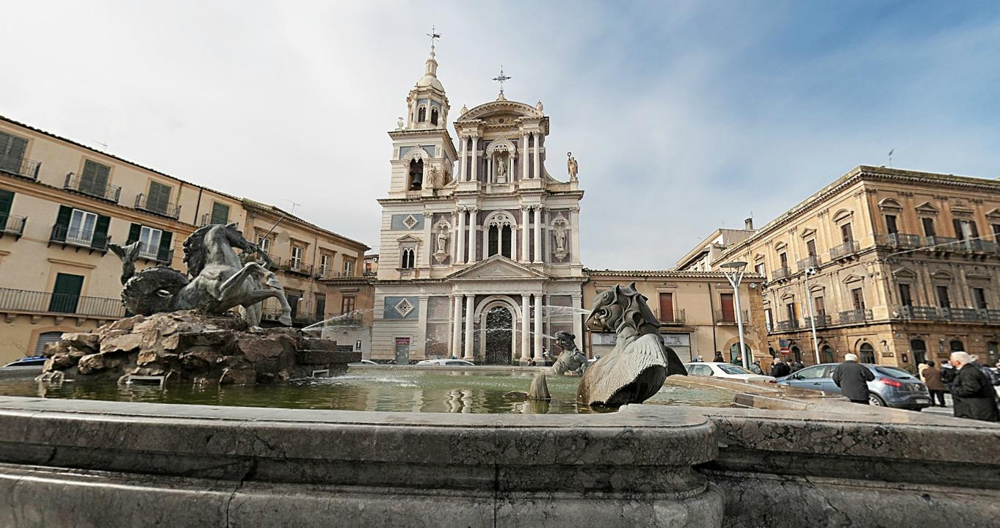

Piazza Garibaldi
 Caltanissetta
Caltanissetta

Caltanissetta è un comune italiano di 57 861 abitanti, capoluogo dell'omonimo libero consorzio comunale, in Sicilia.
A partire dall'Ottocento conobbe un notevole sviluppo industriale grazie alla presenza di vasti giacimenti di zolfo, che la resero un importante centro estrattivo; l'importanza che rivestì nel settore solfifero le valse l'appellativo di "capitale mondiale dello zolfo", e nel 1862 vi fu aperto il primo istituto minerario d'Italia. Negli anni trenta visse un periodo di fermento culturale, nonostante le censure del fascismo, tanto che Leonardo Sciascia la definì una "piccola Atene". Nel secondo dopoguerra il settore estrattivo entrò in crisi e con esso tutta l'economia del territorio, che oggi si basa prevalentemente sul settore terziario.
 Caltanissetta
Caltanissetta